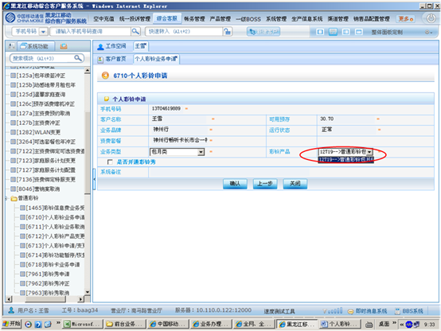

1、进入方式
在“请输入手机号码查询”处输入客户的手机号码，点击查询按钮，点击综合客服-资费变更-普通彩铃-个人彩铃业务申请，或在“快速转入”处输入代码6710个人彩铃业务申请，点击“回车”确定。
2、界面形式及操作步骤说明
（1）在“请输入手机号码查询”处输入客户的手机号码，点击查询按钮，点击综合客服-资费变更-普通彩铃-个人彩铃业务申请，或在“快速转入”处输入代码6710个人彩铃业务申请，点击“回车”确定。
（2）点击“输入”，由客户通过密码小键盘输入服务密码。
（3）选择“确定”。
（4）根据客户需求，选择“业务类型”。
（5）在“彩铃产品”处选择对应的默认产品。

（6）询问客户是否开通彩铃秀业务，根据客户需求，如果开通在“是否开通彩铃秀”前点上“√”，如果客户不开通彩铃秀业务，直接到第（7）步。
（7）点击“确认”。
（8）点击“关闭”，关闭操作提示。
（9）点击“下一步”。
（10）点击“确定”提交本次操作。